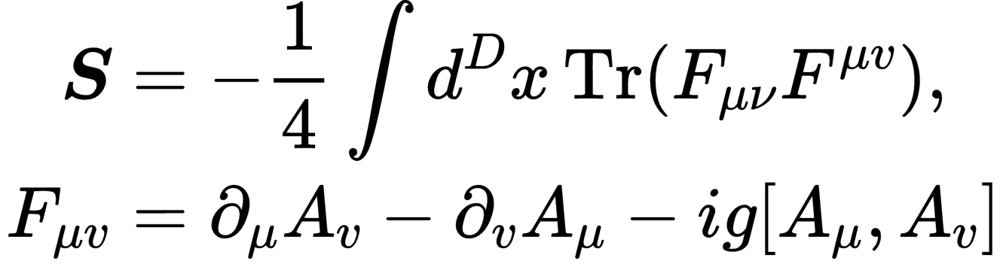

Teoria Quântica de Campos
No início do século passado a física sofreu grandes revoluções. Os dois pilares dessa revolução, que modificaram absurdamente nosso entendimento da natureza, são Teoria da Relatividade (desenvolvida por Einstein, Lorentz, Minkowski e Poincaré) e a Mecânica Quântica (desenvolvida por Max Planck, Niels Bohr, Heisenberg, De Broglie, Schrodinger, Max Born, Pascual Jordan, Paul Dirac, etc. ). Einstein demonstrou que a velocidades próximas à da luz a forma como nós relacionamos a física sentido por dois observadores é bem diferente da que conhecemos do cotidiano.

